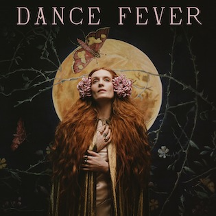
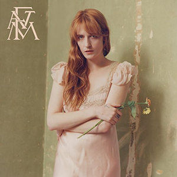
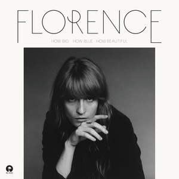

Florence and the Machine (stylized as Florence + the Machine) are an English
indie rock band that formed in London in 2007, consisting of lead vocalist
Florence Welch, keyboardist Isabella Summers, guitarist Rob Ackroyd, harpist
Tom Monger, and a collaboration of other musicians. The band's music has
received acclaim across the media, especially from the BBC, which played a
large part in their rise to prominence by promoting Florence and the Machine
as part of BBC Music Introducing. At the 2009 Brit Awards they received the
Brit Awards "Critics' Choice" award. The band's music is renowned for its
dramatic, eccentric production and Welch's powerful vocals.
The band's debut studio album, Lungs, was released on 3 July 2009, and held
the number-two position for its first five weeks on the UK Albums Chart.
On 17 January 2010, the album reached the top position, after being on the
chart for twenty-eight consecutive weeks.As of October 2010, the album had
been in the top forty in the United Kingdom for sixty-five consecutive weeks,
making it one of the best-selling albums of 2009 and 2010. The group's second
studio album, Ceremonials, released in October 2011, entered the charts at
number one in the UK and number six in the US. The band's third studio album,
How Big, How Blue, How Beautiful, was released on 2 June 2015. It topped the
UK charts, and debuted at number one on the US Billboard 200, their first to
do so. The album reached number one in a total of eight countries and
the top ten of twenty. Also in 2015, the band was the headlining act at
Glastonbury Festival, making Welch the first British female headliner of the
21st century.
Florence and the Machine's sound has been described as a combination of various
genres, including rock and soul. Lungs (2009) won the Brit Award for Best
British Album in 2010. Florence and the Machine have been nominated for six
Grammy Awards including Best New Artist and Best Pop Vocal Album. Additionally,
the band performed at the 2010 MTV Video Music Awards and the 2010 Nobel Peace
Prize Concert.
Band Members
| Albums | Release Year | |
|---|---|---|
|  | Dance Fever | 2022 |
|  | High as Hope | 2018 |
|  | How Big, How Blue, How Beautiful |
2015 |
quellen:
https://en.wikipedia.org/wiki/Florence_and_the_Machine#Band_members
https://therockrevival.com/wp-content/uploads/2022/09/FlorenceandTheMachine2022.jpg